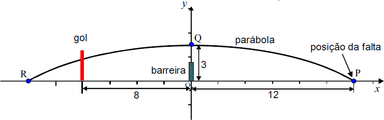

Em um jogo de futebol, um jogador irá bater uma falta diretamente para o gol. A falta é batida do ponto P, localizado a 12 metros da barreira. Suponha que a trajetória da bola seja uma parábola, com ponto de máximo em Q, exatamente acima da barreira, a 3 metros do chão, como ilustra a figura abaixo.
Sabendo-se que o gol está a 8 metros da barreira, a que altura está a bola ao atingir o gol?